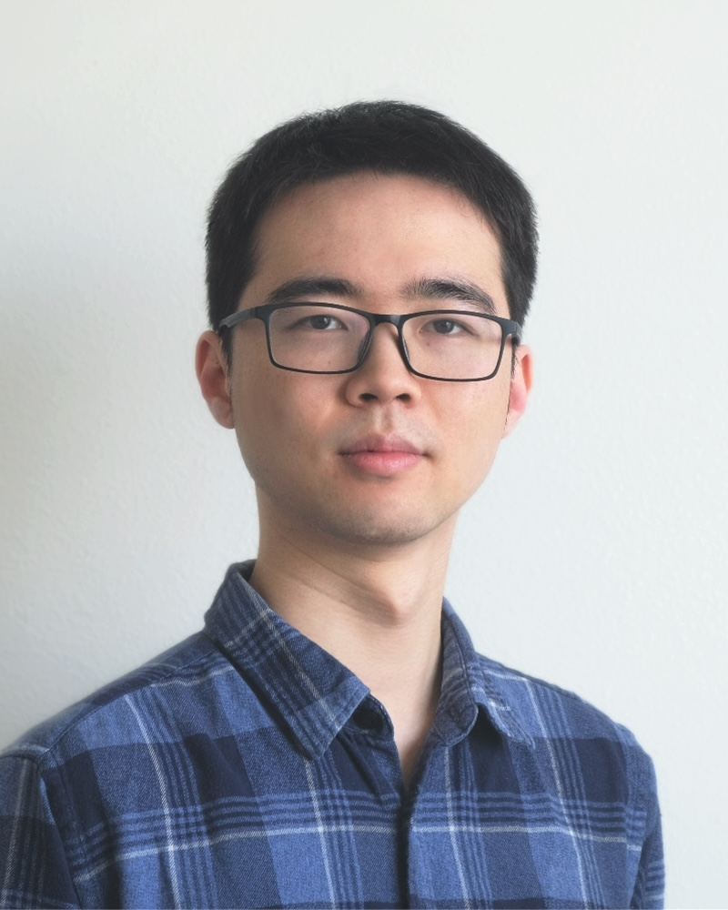

Ph.D. Student in Computer Science
University of Illinois, Urbana-Champaign

Hello! I'm Zhanrui (Ryan) Zhang, a second-year Ph.D. student in Computer Science at the University of Illinois at Urbana-Champaign (UIUC). I work in the Laboratory for Parallel Numerical Algorithms (LPNA), where I am incredibly grateful to be advised by Prof. Edgar Solomonik. My research broadly focuses on scientific computing and numerical linear algebra. Specifically, I am interested in tensor computations and its applications. Currently, my work involves developing low-rank solvers for high-dimensional kinetic PDEs. Prior to my doctoral studies, I earned my Master of Computer Science here at UIUC, and my B.Eng. from ShanghaiTech University.